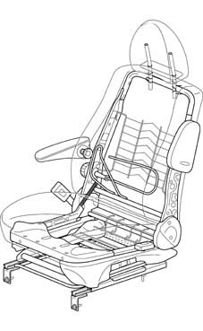
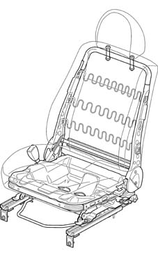
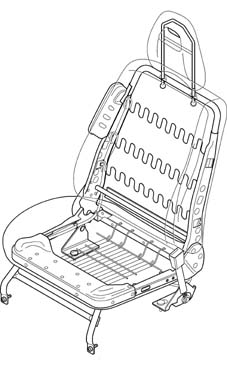
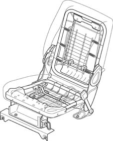

Introduction - FRONT SEATS
- Path
- Descriptions > 70 FITTINGS > 7045 FRONT SEATS > Introduction - FRONT SEATS
- Kind
- system description
- Applies to
- all engines; all production periods
- Interactive page
- https://sloeber94.github.io/elrnDB-fDbl/en/#/2585428
Applies to: all engines; all production periods
Because the body of this vehicle comes in so many variants, the front seats can be arranged in many different ways.
All seat versions have been designed to ensure comfort and safety while driving. The structure of the seating area has an anti-submarining ridge to prevent the passenger from sliding under the section of the seat belt which goes round their abdomen in the case of strong deceleration (submarining effect). The squab frame consists of a steel structure that is secured by a joint designed to improve strength and energy absorbance in the case of rear impact.
Driver's seat

Applies to: all engines; all production periods
Sliding seat with reclining squab, height adjustment, arm-rest, lumbar adjustment and side bag
Panorama version passenger seat

Applies to: all engines; all production periods
Sliding seat with easy entry function (guides with mechanical memory device)
Cargo version passenger seat

Applies to: all engines; all production periods
Fixed seat
Cargo version passenger seat

Applies to: all engines; all production periods
Folding seat